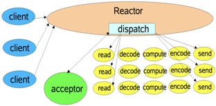
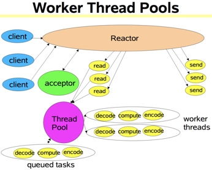
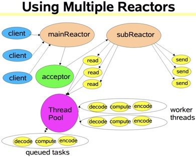

概念
reactor设计模式，是一种基于事件驱动的设计模式。Reactor框架是 ACE 各个框架中最基础的一个框架，其他框架都或多或少地用到了Reactor框架。
在事件驱动的应用中，将一个或多个客户的服务请求分离（demultiplex）和调度（dispatch）给应用程序。在事件驱动的应用中，同步地、有序地处理同时接收的多个服务请求。
reactor模式与外观模式有点像。不过，观察者模式与单个事件源关联，而反应器模式则与多个事件源关联 。当一个主体发生改变时，所有依属体都得到通知。
优点
1）响应快，不必为单个同步时间所阻塞，虽然Reactor本身依然是同步的；
2）编程相对简单，可以最大程度的避免复杂的多线程及同步问题，并且避免了多线程/进程的切换开销；
3）可扩展性，可以方便的通过增加Reactor实例个数来充分利用CPU资源；
4）可复用性，reactor框架本身与具体事件处理逻辑无关，具有很高的复用性；
缺点
1）相比传统的简单模型，Reactor增加了一定的复杂性，因而有一定的门槛，并且不易于调试。
2）Reactor模式需要底层的Synchronous Event Demultiplexer支持，比如Java中的Selector支持，操作系统的select系统调用支持，如果要自己实现Synchronous Event Demultiplexer可能不会有那么高效。
3） Reactor模式在IO读写数据时还是在同一个线程中实现的，即使使用多个Reactor机制的情况下，那些共享一个Reactor的Channel如果出现一个长时间的数据读写，会影响这个Reactor中其他Channel的相应时间，比如在大文件传输时，IO操作就会影响其他Client的相应时间，因而对这种操作，使用传统的Thread-Per-Connection或许是一个更好的选择，或则此时使用Proactor模式。
架构模式
1、架构图




2、构成
Handles ：表示操作系统管理的资源，我们可以理解为fd。
Synchronous Event Demultiplexer ：同步事件分离器，阻塞等待Handles中的事件发生。
Initiation Dispatcher ：初始分派器，作用为添加Event handler（事件处理器）、删除Event handler以及分派事件给Event handler。也就是说，Synchronous Event Demultiplexer负责等待新事件发生，事件发生时通知Initiation Dispatcher，然后Initiation Dispatcher调用event handler处理事件。
Event Handler ：事件处理器的接口
Concrete Event Handler ：事件处理器的实际实现，而且绑定了一个Handle。因为在实际情况中，我们往往不止一种事件处理器，因此这里将事件处理器接口和实现分开，与C++、Java这些高级语言中的多态类似。
3、模块交互
1）我们注册Concrete Event Handler到Initiation Dispatcher中。
2）Initiation Dispatcher调用每个Event Handler的get_handle接口获取其绑定的Handle。
3）Initiation Dispatcher调用handle_events开始事件处理循环。在这里，Initiation Dispatcher会将步骤2获取的所有Handle都收集起来，使用Synchronous Event Demultiplexer来等待这些Handle的事件发生。
4）当某个（或某几个）Handle的事件发生时，Synchronous Event Demultiplexer通知Initiation Dispatcher。
5）Initiation Dispatcher根据发生事件的Handle找出所对应的Handler。
6）Initiation Dispatcher调用Handler的handle_event方法处理事件。
import java.io.IOException;
import java.net.InetAddress;
import java.net.InetSocketAddress;
import java.nio.channels.SelectionKey;
import java.nio.channels.Selector;
import java.nio.channels.ServerSocketChannel;
import java.util.Iterator;
import java.util.Set;
/**
* 反应器模式
* 用于解决多用户访问并发问题
*
* 举个例子：餐厅服务问题
*
* 传统线程池做法：来一个客人(请求)去一个服务员(线程)
* 反应器模式做法：当客人点菜的时候，服务员就可以去招呼其他客人了，等客人点好了菜，直接招呼一声“服务员”
*
*/
public class Reactor implements Runnable{
public final Selector selector;
public final ServerSocketChannel serverSocketChannel;
public Reactor(int port) throws IOException{
selector=Selector.open();
serverSocketChannel=ServerSocketChannel.open();
InetSocketAddress inetSocketAddress=new InetSocketAddress(InetAddress.getLocalHost(),port);
serverSocketChannel.socket().bind(inetSocketAddress);
serverSocketChannel.configureBlocking(false);
//向selector注册该channel
SelectionKey selectionKey=serverSocketChannel.register(selector, SelectionKey.OP_ACCEPT);
//利用selectionKey的attache功能绑定Acceptor 如果有事情，触发Acceptor
selectionKey.attach(new Acceptor(this));
}
@Override
public void run() {
try {
while(!Thread.interrupted()){
selector.select();
Set<SelectionKey> selectionKeys= selector.selectedKeys();
Iterator<SelectionKey> it=selectionKeys.iterator();
//Selector如果发现channel有OP_ACCEPT或READ事件发生，下列遍历就会进行。
while(it.hasNext()){
//来一个事件 第一次触发一个accepter线程
//以后触发SocketReadHandler
SelectionKey selectionKey=it.next();
dispatch(selectionKey);
selectionKeys.clear();
}
}
} catch (IOException e) {
e.printStackTrace();
}
}
/**
* 运行Acceptor或SocketReadHandler
* @param key
*/
void dispatch(SelectionKey key) {
Runnable r = (Runnable)(key.attachment());
if (r != null){
r.run();
}
}
}
import java.io.IOException;
import java.nio.channels.SocketChannel;
public class Acceptor implements Runnable{
private Reactor reactor;
public Acceptor(Reactor reactor){
this.reactor=reactor;
}
@Override
public void run() {
try {
SocketChannel socketChannel=reactor.serverSocketChannel.accept();
if(socketChannel!=null)//调用Handler来处理channel
new SocketReadHandler(reactor.selector, socketChannel);
} catch (IOException e) {
e.printStackTrace();
}
}
}
import java.io.IOException;
import java.nio.ByteBuffer;
import java.nio.channels.SelectionKey;
import java.nio.channels.Selector;
import java.nio.channels.SocketChannel;
public class SocketReadHandler implements Runnable{
private SocketChannel socketChannel;
public SocketReadHandler(Selector selector,SocketChannel socketChannel) throws IOException{
this.socketChannel=socketChannel;
socketChannel.configureBlocking(false);
SelectionKey selectionKey=socketChannel.register(selector, 0);
//将SelectionKey绑定为本Handler 下一步有事件触发时，将调用本类的run方法。
//参看dispatch(SelectionKey key)
selectionKey.attach(this);
//同时将SelectionKey标记为可读，以便读取。
selectionKey.interestOps(SelectionKey.OP_READ);
selector.wakeup();
}
/**
* 处理读取数据
*/
@Override
public void run() {
ByteBuffer inputBuffer=ByteBuffer.allocate(1024);
inputBuffer.clear();
try {
socketChannel.read(inputBuffer);
//激活线程池 处理这些request
//requestHandle(new Request(socket,btt));
} catch (IOException e) {
e.printStackTrace();
}
}
}
总结
reactor模式是javaNIO非堵塞技术的实现原理，我们不仅要知道其原理流程，还要知道其代码实现，当然这个reactor模式不仅仅在NIO中实现，而且在redies等其他地方也出现过，说明这个模式还是比较实用的，尤其是在多线程高并发的情况下使用。